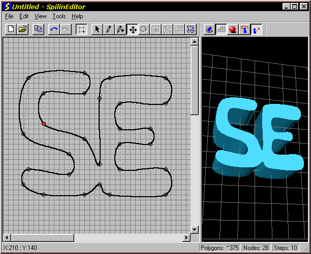
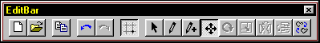
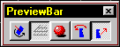
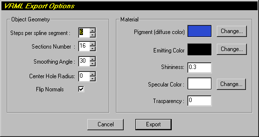

On-line Documentation |
Back to HOME |
After the first execution SpilinEditor saves to the system registry some of the preferences settings (all the colors, graphic parameters, object parameters) and its window state and placement, these values are then reused at each successive execution.
An application extension is registered (*.spi) so that double-clicking these files launches SpilinEditor.
SpilinEditor cannot preview self intersecting splines correctly (but draws and export them): you may experiment some inside-out surfaces on the whole object in LATHE preview, on the side in PRISM preview.

The Main Window is divided into two panes: the left one is the 2D Edit Pane the right one is the 3D Preview Pane.
In the 2D Edit Pane you
edit the cubic splines by creating and moving the control points.
A red circle represents a selected point, the green circle
identify the last point (the create tool adds points starting from this one).
A right mouse click brings up a context menu with most used
commands.
The status bar displays mouse position coordinates and commands
descriptions on the left while on the right we have other
indicators: a polygon counter (approximated in PRISM previews), a
nodes counter and a spline steps indicator.
In the 3D Preview Pane you see in real time the effect of 2D editing on the previewed object. The 3D view can be rotated by left mouse click-and-dragging or zoomed by right mouse click-and-dragging. In LATHE previews of open splines the interior surface is painted with a darker and less refletive color than the exterior surface.
Below is a description of Spilin Editor specific menu items (the common ones are not descripted):
File: contains the Export submenu: selecting the export format (POV or VRML) recalls a file dialog and then one of the export dialogs (see below).
Edit: the Copy item exports to the clipboard the currently previewed object in POV format using some settings speified in the POV-Export Settings Page (see below).
View: the Settings item recall the settings dialog box (see below).
Tools: Replicates the editing commands on the EditBar.
Help: the Keyboard Help item presents a dialog with commands accessible trough the keyboard.

The EditBar
is the toolbar for the 2D pane. From left to right we have:
File New, File Open: obvious.
Copy: exports to the clipboard the currently previewed
object in POV format.
Undo,Redo: obvious.
Toggle Grid: obvious.
Create, Translate, Insert, Select, Rotate, Scale,
MirrorX, MirrorY: these are the editing tools, note that
rotate, scale and mirror tools work only on multiple selected
points (they refer to the center of selection).
Open/Close Spline: obvious.

The PreviewBar
is the toolbar for the 3D pane.From left to right we have:
Flip Normals: reverses the polygons normals. Use
if the object looks inside-out or darker than normal.
Toggle Grid Plane: obvious.
Toggle Smooth Shading: obvious.
Lathe/Prism Preview: choose which type of object
to preview, note that the prism button is only available with
closed splines.

IMPORTANT: developing of this feature has
been abandoned starting from this version: you will likely get
wrong results (closed splines don't work).
The VRML export dialog let you to choose the detail of the
geometry and some material properties.
Steps per spline segment: set the
polygonal detail of the cross-section.
Sections number: set the detail of the
lathed object
Smoothing Angle: indicates the
threshold angle between two polygons, below this angle polygon
are smooth shaded (see VRML 2.0 documentation).
Center Hole Radius: specify the radius
of an optional center hole
Flip normals: this checkbox reflects the preview
setting so youll'obtain exactly the previewed object.
Material Parameters: see VRML 2.0
documentation for a complete explanation of these parameters.
Here are grouped the 2D Edit Pane parameters.
Pen Color and Size, Grid Color and Size, Background
Color: should be obvious.
Curve Steps: is the detail of the
cubic_spline curves.
Draw Nodes Polygon: if selected dotted
lines joining internal spline nodes are drawn.
Here you choose the previewed object characteristics.
Curve Steps: is the detail of polygonal
approximation to make the curves.
Sections: is the number of sections
used to approximate the Lathe oject.
Extrusion Height: is used in the
preview of the Prism object.
Smooth Shading: (de)activates smooth
shading.
Back-Face Culling: actually it has no
effect since back-face culling is treated internally, consider it
a performance indicator.
Here you choose other preview aspects.
Colors: should be obvious (light color
indicates its intensity too).
Lights Position: you can choose between
eight directions (North, South and so on).
Here you choose the export options that apply to the File
Export command and to the Edit Copy command with
the exception of the primitive type that is that currently
previewed.
Primitive type: can be Lathe, Prism or
Sor.
Obejct Name: is the name given to the
object and to use in the POV scene file to instantiate the object
once include its relative .INC file. It defaults to the file name
when File Export is choosen.
Conical Sweep,Open and Sturm: they are
primitive options, see POV documentation.
Extrusion Height: the Prism object
extends from origin to this value along y axis.
Coordinates Values: if set to Normalize
exported coordinates are normalized so the objects fit into a one
unit radius cylinder of one unit height (value in Extrusion
Height for prism). If set to Proportional the whole area of the
2D editor is mapped to a square of given side in POV units.
NOTE: It's possible to export a SOR object
because the point specification of this primitive is very similar
to the LATHE one but the SOR curves equation is different from
the LATHE one so the object isn't correctly previewed (neither in
2D nor in 3D).
Spilin Editor contains free reusable code copyrighted by Keith
Rule (Undo-Redo support) and Chris Maunder
(HyperLink control in About DialogBox).
Visit MFC SourceBook site
for more infos (a must see site if you are a programmer).
Special Thanks go to the two invaluable Beta Testers: Cesare DiGravio and Bill DeWitt
Copyright © Alessandro Falappa
Permission to use, copy, modify, and distribute this software and its documentation for any purpose is hereby granted without fee, provided that the above copyright notice, author statement appear in all copies of this software and related documentation.
THE SOFTWARE IS PROVIDED "AS-IS" AND WITHOUT WARRANTY OF ANY KIND, EXPRESS, IMPLIED OR OTHERWISE, INCLUDING WITHOUT LIMITATION, ANY WARRANTY OF MERCHANTABILITY OR FITNESS FOR A PARTICULAR PURPOSE.
IN NO EVENT SHALL ALESSANDRO FALAPPA BE LIABLE FOR ANY SPECIAL, INCIDENTAL, INDIRECT OR CONSEQUENTIAL DAMAGES OF ANY KIND, OR ANY DAMAGES WHATSOEVER RESULTING FROM LOSS OF USE, DATA OR PROFITS, WHETHER OR NOT ADVISED OF THE POSSIBILITY OF DAMAGE, AND ON ANY THEORY OF LIABILITY, ARISING OUT OF OR IN CONNECTION WITH THE USE OR PERFORMANCE OF THIS SOFTWARE.
| Page by Alessandro Falappa ©1997. | Last Updated 27/02/98 19:06 |